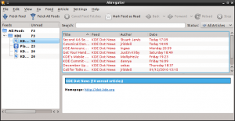
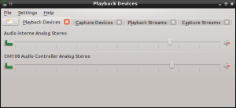

"It is very easy to recognize a KDE application: one always has to resize it to make it usable!". That's what a friend once told me.
You may think "Why should I care? It is really easy to resize a window or a column!". I think we should care, at least for two reasons:
I picked two examples to illustrate this problem:
The window is too small to fit the current tab title. Additionally the sliders have very little room, making them difficult to manipulate.
This is how Akregator looks when started for the first time:
Here the main problem is column sizes:
The sidebar is quite useless until you resize the columns: you can't read more than the first two or three characters of the feed names.
The article list does not perform much better either: the largest column is the date column, where the most important information is probably always the title (Additionally, articles are sorted by title, while I think it would make more sense to sort by date by default)
rm -rf ~/.kde/share/*/[app]*
(you may want to backup these files first..)
The application should now start as if it was the first time, unless it stores files somewhere else.
If you want to experience what a new user will face when he starts the whole desktop for the first time, the easiest and safest solution is probably to create yourself a demo user. I use this trick quite often and even went as far as putting together this simple script named cleandemo to easily restart fresh:
#!/bin/sh dir=/home/demo sudo rm -rf $dir sudo mkdir $dir sudo chown demo:demo $dir
Most often however the main widget is a container with an associated layout, so it should return a reasonable size hint. But this size hint may still make your application look a bit cramped. In this case you can reimplement the sizeHint() method of the main widget or of the main window (the latter will include the rest of the "chrome": menubar, toolbars, statusbar... in the result) to return a more appropriate size. If you do this, always try to return a size which takes the size hint into account:
QSize MyWidget::sizeHint() const
{
// Give the window a bit more height
QSize sh = BaseWidget::sizeHint();
sh.setHeight(sh.height() * 3 / 2);
return sh;
}
Or like this:
QSize MyWidget::sizeHint() const { // Make sure the window is at least 500 x 400 big return BaseWidget::sizeHint().expandedTo(QSize(500, 400)); }
Avoid hardcoding the size: a decent size on your machine may not be decent at all on a netbook or for a vision-impaired user with an adapted font configuration.
Fixing column sizes is a bit more tricky. The first thing one should ask is "are all those columns necessary?", indeed, the less columns there is the more room they get. In the case of Akregator sidebar, the "unread" and "total" columns could be removed and the relevant information appended to the feed names. Something like this:
To get decent column sizes you then have to work with QHeaderView methods. The simplest solution is to set the column resize mode to QHeaderView::ResizeToContents. But don't do this if your list contains thousand lines: Qt has to compute the width of each cell to decide the width of the column. It is also probably not a good idea to use this mode if the list is updated very often because the column size will change as new items are added or removed, making the list hard to read.
Another simple alternative is QHeaderView::Stretch. A column using this resize mode will use all available space regardless of the content. It won't be affected by the number of lines or by updates.
These two modes share a major drawback though: columns using them can't be manually resized. This makes them impractical for Akregator article list: QHeaderView::ResizeToContent cannot be used because if a title is very long it can push all other columns outside leaving no way to bring them back, short of resizing the window itself. QHeaderView::Stretch cannot be used either because if the title of an article is very long, too long to fit in the column, then the user won't be able to resize the column. The only solution would again be to resize the window itself.
So what can be done? Qt is not as helpful as we are used to here. So far the best solution I found is to resize the important columns to fit their content once, right after the list has been filled. If you are using a QTreeView, this can be done easily with QTreeView::resizeColumnsToContent(int).
I think this kind of mistakes are better demonstrated with real examples but I realize having pointing out individual applications is not very nice. To make up for that, I worked on improving KMix and I am working on Akregator as well. Here is the new layout I came up with for KMix:
Oh, and I fixed the hardcoded size hint in Gwenview...
{kind=link}
{kind=link}
{kind=link}